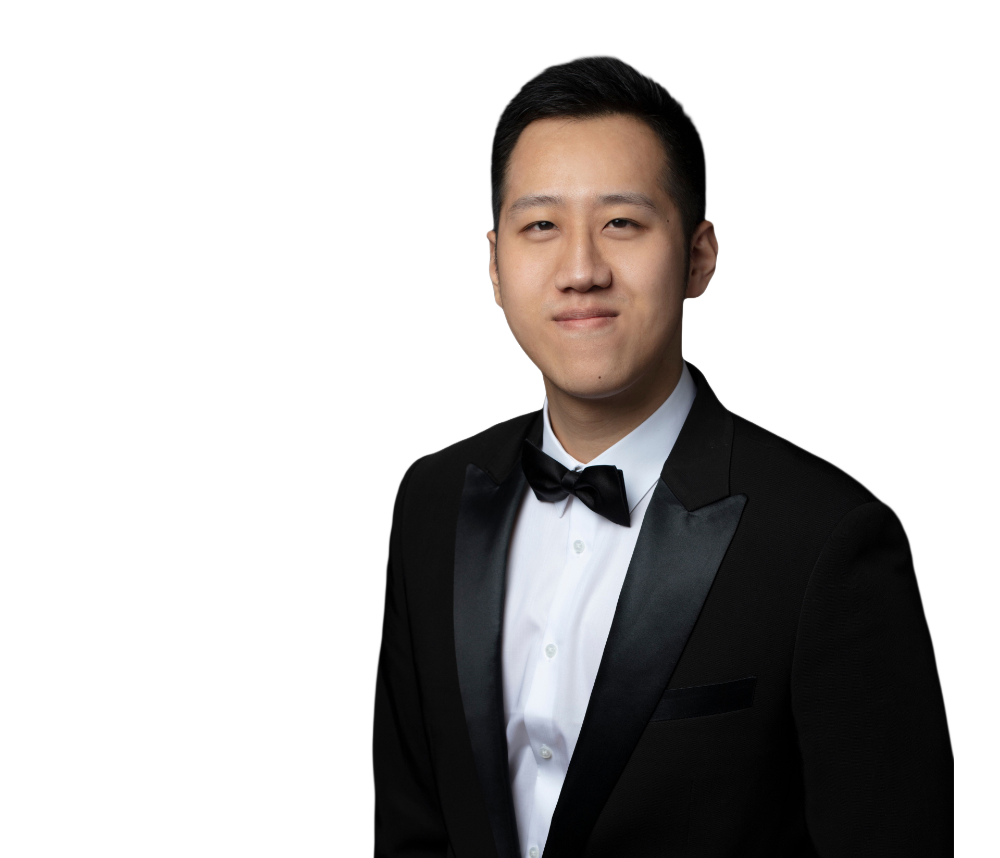

Renée Fleming Fellow.
Selected in 2025 for the Renée Fleming Fellowship at the Aspen Music Festival — a residency that paired stagework on La Bohème with private mentorship, recital, and master-class study.

“A voice of bronze and lamplight —
at home in tragedy, fluent in tenderness.”
Confirmed dates across the 2026 and 2027 seasons. Recent and historic seasons follow below.
Excerpts from recent stage and concert engagements.

Yichen Xue is an American baritone whose voice — at once burnished and tender — has been heard on stages from Aspen to Glimmerglass, from Arizona Opera to The Kennedy Center. A 2025 Renée Fleming Fellow and former studio artist with Arizona Opera and Wolf Trap Opera, he sings a repertoire that ranges from Rossini’s Dandini to Puccini’s Marcello and Sharpless.
“Sings with the kind of quiet authority that lets a phrase land twice — first in the ear, then in the chest.”
Recent engagements include Marcello in La Bohème at the Aspen Music Festival, Nardo in Mozart’s La finta giardiniera at Arizona Opera, and the Imperial Commissioner in Madama Butterfly. Upcoming seasons bring Dandini in La Cenerentola, Senator Potter / General Airlie in Fellow Travellers at the Glimmerglass Festival, and a cover of Ping in Turandot at Virginia Opera.
He holds a Bachelor of Music in Voice from the Manhattan School of Music and a Master of Arts in Vocal Performance from Hunter College–CUNY, where he studied with Ron Raines and Maitland Peters.

Selected in 2025 for the Renée Fleming Fellowship at the Aspen Music Festival — a residency that paired stagework on La Bohème with private mentorship, recital, and master-class study.
Music released with Etymology Records, available on Spotify.
A growing catalogue of art-song and aria recordings, released with Etymology Records. New releases are added each season; listen end-to-end on Spotify, or follow for first-listens.
Listen on Spotify